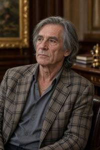
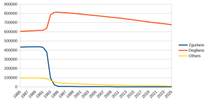

Deglian Republic


The Deglian Republic (Deglian Deglänska Republyka, Zgurian Degljanska Republyka; abbreviated DR, informally Deglia) is one of two unrecognized de facto states on the territory of Former Upper Pannonia (FUP). It took shape as a political entity during the Upper Pannonian civil war of 1992-1993 and was officially proclaimed on 16 November 1994. The republic has no formal diplomatic relations with any country. International documents refer to it as the “Deglian Zone”, and its only official channel to the outside world is the UN Observer Mission in Former Upper Pannonia. Recognition is blocked by the absence of a peace treaty with the other party to the conflict, the Zgurian Republic. Fighting between the two stopped in 1995 with the Lausanne Agreements, but the disputed issues remain unresolved and the two sides' positions are still irreconcilable.
History
The assassination of Queen Ljudmila on 17 September 1994 and the collapse of the ceasefire ended any hope of restoring a unified Pannonian state. As the war resumed, a Deglian National Congress of Deglian deputies and prominent field commanders met in southern Vronovica in November 1994, and on 16 November it declared the independence of the Deglian Republic. The Lausanne Agreements of 1995 were concluded between representatives of the Zgurian and Deglian republics as independent states, although neither recognized the other diplomatically. On 1 September 1995 a referendum approved the Deglian Constitution with 76% of the vote. The Constitution established Deglia as a parliamentary republic with no presidency. The first parliamentary elections, held on 20 February 1996, were won by a landslide by the “Deglian People's Front – Deglian Socialist Party” bloc (DPF-DSP), and the former field commander Marko Kazsenec became prime minister.
Under the DPF-DSP, the field commanders kept much of their power. They had formally disbanded their armies but still commanded large bodies of armed followers and had no qualms about imposing their political will by force. Armed showdowns, political murders, kidnappings and violent seizures of government offices were routine. The weak government could not restore order, not least because its members were far more interested in enriching themselves. The collapse of the Sphynx Capital pyramid scheme set off mass protests that forced the Kazsenec cabinet to resign and call early elections for 2 October 1998. A protest vote brought to power European Path, a party sharply opposed to the DPF-DSP. Led by the 35-year-old Marian Grezdenski, it campaigned for “normalization”: an end to the dominance of the field commanders, the rule of law, and a peace treaty with the Zgurian Republic that would open the way to diplomatic recognition and closer integration with Europe.
None of this came to pass. In UNOMFUP-brokered talks with the Zgurians, Grezdenski signalled that he was ready to make peace even at the cost of concessions. The Zgurians took this as weakness and demanded more. Looking for Western support, Grezdenski opened secret negotiations on handing war criminals over to the International Tribunal for Former Upper Pannonia in The Hague. The field commanders, who still controlled all the security forces, found out. Every one of them stood to face the Hague tribunal. Setting their quarrels aside, they conspired and staged a military coup on 23 March 1999. Grezdenski and other European Path leaders were arrested, and parliament and the government were dissolved. The coup leaders, who never revealed their faces or names, proclaimed themselves the “Secret Control Committee” (SCC) and declared martial law “until the conflict is finally settled”. No protests followed: voters had already lost faith in European Path, which had not kept a single one of its promises.
The coup nearly reignited the war. The Zgurian Republic declared martial law of its own and mobilized its army. UNOMFUP and the EU strongly condemned the coup, imposed sanctions and demanded the restoration of legitimate government, and financial aid to the DR was frozen. After a month of tense negotiations a compromise was reached: the SCC released the detainees and agreed with the Zgurians to ease military tensions. Financial aid was never restored, but the sanctions were partly lifted and cooperation with UNOMFUP was gradually resumed. As of 2026, Deglia remains under martial law, and the SCC is still in power.
Government and politics
The 1995 Constitution is formally still in force, but its key articles were suspended in 1999 by the Martial Law Act, which now serves as the country's de facto constitution. The legal justification is that the DR remains at war for as long as there is no peace treaty with the Zgurians.
Secret Control Committee
Under the Martial Law Act, the SCC is an emergency authority responsible for national security. It combines legislative, executive and judicial power: it appoints the government and the judges, approves the budget and legislation, acts as the court of final appeal, and issues decrees of its own that override both laws and government regulations. Since 2020 the SCC has issued far fewer decrees and has stopped overturning government regulations, which it used to do often.
The membership of the SCC and the procedure for appointing its members are military secrets. Its original makeup, however, was plain to see: it consisted of the commanders of the units that seized the government buildings on 23 March 1999. Among them were field commanders notorious for war crimes committed in 1992-1995: Zseljo “Spiderman” Totov, Martyn “Prince” Bregovi, Anton “Leopard” Pekarczik and Katarina “Redhead” Brankova. They were joined by former prime minister Kazsenec and probably a few others. None of them has been mentioned anywhere since the coup; they and their families seem to have vanished without a trace.
Totov died in 2020 and Pekarczik in 2023. Only after their deaths was their SCC membership officially announced, and both were given state funerals. No similar announcements have followed, which suggests that the remaining original members are still alive. The youngest of them, Martyn Bregovi, is 62 (as of 2026). It is not known whether anyone was co-opted to replace the two dead members. There have been no disappearances since 1999, so any new member must be keeping the appointment secret and going on with an ordinary life.
Legislative Council
The DR has held no parliamentary elections since 1999. The nearest thing to a parliament is the Legislative Council, made up of delegates from municipal councils, trade unions, industry associations and other public organizations approved by the SCC. The council has no legislative power of its own: it can only pass bills and submit them to the SCC for approval. All bills are introduced by the government, and debates and votes take place behind closed doors. Until 2020 the SCC often rejected bills or sent them back for revision; since then every bill has been approved without amendment.
Prime minister and cabinet

The prime minister and cabinet are appointed by the SCC and answer to it. Since 2018 the post of prime minister has been held by Bogdan Ravczik (b. 1978). He belongs to the younger generation and is the first prime minister who did not fight in the war. His time in office has brought important and still poorly understood changes to the Deglian political system. In June 2020, at the height of the COVID-19 pandemic and shortly after Zseljo Totov died of the disease, Ravczik staged something like an internal coup. The ministers of finance and the interior were arrested for high treason, accused of working for Zgurian intelligence and plotting to assassinate SCC members. A closed court sentenced both to death by firing squad, and they were executed in December 2020. Even before the verdict, Ravczik had substantially amended the Martial Law Act. Previously, most important ministers and the speaker of the Legislative Council could communicate directly with SCC members; now, “for security reasons”, only the prime minister could. The amendment, which made the prime minister the sole link between the SCC and the non-secret part of the state, was passed by the Legislative Council and approved by the SCC without changes.
Opposition


The Martial Law Act bans political parties in Deglia, along with any form of opposition activity. When foreign media refer to the “Deglian democratic opposition”, they mean the Deglian Civic Initiative (DCI), an NGO headed by Marian Grezdenski, the former European Path prime minister. The DCI stays out of politics. All it does is publish an annual report documenting all kinds of human rights abuses and breaches of the law by the DR authorities. The report is printed abroad, but Grezdenski lives in Deglia, and after each new issue he is arrested and fined heavily, typically 20-30 million euros. The fine is paid out of an EU grant “for the support of civil society institutions in FUP”.
The arrangement looks rather absurd, as much in the DR does. The EU refuses financial aid to the authoritarian Deglian regime, yet effectively subsidizes it, with Grezdenski's foundation as the go-between. The practice is often criticized within the EU, but on the whole it suits everyone, including Grezdenski himself, who accepted the rules of the game long ago. The DCI and the Deglian authorities have settled into a peculiar kind of cooperation. The authorities leak the evidence of human rights abuses to Grezdenski themselves (he obviously has no independent sources) and protect his monopoly on human rights work by ruthlessly nipping any rival project in the bud.
Judiciary
The Martial Law Act suspended the constitutional articles guaranteeing judicial independence. All judges are appointed by the SCC on the nomination of the Ministry of Justice, and since 2020 the SCC has approved every nominee without objection. Alongside the ordinary courts there are emergency courts, which hear cases of treason and other crimes against the state behind closed doors.
The SCC is itself the highest court and occasionally hears cases of special importance. In the “two ministers case” of 2020, however, it merely confirmed the sentence handed down by an emergency court.
Regional and local government
The DR is divided into five counties (ujezd) and the capital, Vronovica, which in practice consists of only the three southern districts: the Fifth, Sixth and Seventh. Each of these units is headed by a governor appointed by the SCC and subdivided into municipalities. Vronovica has three municipalities, one for each district. In the counties, municipalities are smaller and more numerous, each made up of a town or large village and its surrounding area. Municipalities are self-governing and run by elected councils. Municipal elections are the only elections Deglia has held under martial law. They can hardly be called fully free, but they are competitive and at times very lively, giving vent to political passions that find no outlet at the national level. The central authorities deliberately encourage this competition, as it keeps entrenched local cliques from taking hold.
With parties banned, candidates can only stand as independents. Every candidacy must be approved by the Security Police, which may reject a suspect candidate without giving reasons. The SCC, as the highest court, can hear appeals against such rejections, but no case of one being overturned is known. Registered candidates receive state funding for their campaigns, and private sponsorship is prohibited. Campaigning is restricted to local government matters: any criticism of martial law, or of the central authorities in general, is forbidden and gets the candidate struck off.
| No. | Territorial unit | Population (2025) |
|---|---|---|
| 1 | Vronovica | 347670 |
| 2 | Gowbkaslava | 129706 |
| 3 | Krolovy Zseljezni | 93390 |
| 4 | Rudec | 49911 |
| 5 | Zorzsin | 34494 |
| 6 | Drozsin | 29321 |
Military
Born of a military coup, the Deglian regime has always given the army special attention. The Lausanne Agreements barred both states of Former Upper Pannonia from keeping a conscript army. Deglia observes the ban in form while effectively getting around it. Its armed forces consist of the Deglian National Army (DNA), manned by volunteers, and the Civil Defence Service (CDS), in which every male citizen must serve from the age of 18 to 21. This two-tier arrangement carries on the tradition of the armed forces of socialist Upper Pannonia, with their regular army and territorial reserve. Officially the CDS is not a conscript army, since its members are never issued lethal weapons and train with dummies or paintball guns. The CDS numbers about 12,000, and the DNA has an establishment strength of about 8,000.
The DNA answers to the Ministry of Defence through the General Staff. Its core is two mechanized brigades, the Vronovica Brigade and the Gowbkaslava Brigade. It also includes an artillery regiment, an air defence battalion, a helicopter squadron, an engineer battalion, a signals battalion, and a special forces regiment that reported directly to the SCC until 2020 and has since reported directly to the prime minister. The CDS comes under the Ministry of the Interior and is organized by territory: Vronovica and each county raise a regiment, and each municipality a company. Besides drill, CDS members dig trenches, clear rubble, repair roads and bring in the harvest on state farms, which takes up to a third of their term of service.
Since 1999 the US and the EU have kept an arms embargo on the Deglian army. This has not stopped it from buying weapons from a number of non-Western countries and on the global black market. Small arms, mines and mortars are still made at one of the “numbered” plants in Gowbkaslava, which Deglia acquired along with the city. Heavy equipment was bought through intermediaries in the 2000s: some 60 T-72 tanks upgraded in Belarus, Chinese multiple rocket launchers, and Mi-24 helicopters from former Soviet republics. Since 2021 the army has been receiving Iranian attack drones.
Military spending runs at about 70 million euros a year, 10 percent of the budget. Officers are trained at the Vronovica Military Academy. The Deglian army is seven times the size of the Zgurian one, and far better armed, equipped, trained and motivated. For all this superiority, the DR officially and unconditionally renounces aggression: “We firmly abide by the Lausanne Agreements and will under no circumstances be the first to use force.” Deglia's military might serves less as an instrument of force than as leverage for securing favourable terms in its agreements with UNOMFUP and other international bodies.
Law enforcement
Deglia has a single, centralized police force under the Ministry of the Interior. Some police functions are also carried out by two security services: the Security Police, which answers directly to the SCC, and military counterintelligence, which answers to the Ministry of Defence. The powers of all three are broad, vaguely defined and overlap heavily, which breeds rivalry between them. Counterintelligence handles everything concerning foreigners in the DR, and here it also competes with military intelligence. Every foreigner entering Deglia is placed under its surveillance, quite openly and officially, as described in the article on visiting FUP.
The size of the police and security services is classified. The published version of the budget lumps their funding into a single line, “law and order and public security”, at about 7 percent of total spending. In practice, though, these agencies take in far more through legalized self-financing. Every business has a curator to which it hands over part of its profits, quite officially. Ordinary civilian businesses are supervised by the police, those trading abroad by counterintelligence, and large firms working for the army or the security services by the Security Police. The system is hard to describe as anything but institutionalized bribery, yet entrepreneurs who have done business in both the ZR and the DR prefer it to the wholly informal and unlimited extortion practised by Zgurian officials.
Role of the UN Mission
Since 1999 the UN Observer Mission (UNOMFUP) has refused to recognize the Deglian government as legitimate, while acknowledging it as “exercising de facto authority and accountable for compliance with the Lausanne Agreements”. On that basis the Mission works with the DR on the same terms as with the ZR, whose government's legitimacy is not in question. Under the Lausanne Agreements, both parties undertook to refrain from settling disputes by force and to respect human rights, and UNOMFUP was given the right to monitor these commitments. Under this mandate, UNOMFUP observers are present in every state body of the DR, the SCC included. The Mission's observer on the SCC signs a special confidentiality agreement, and their reports are left out of UNOMFUP's official publications.
UNOMFUP observers gather information and publish reports but do not interfere directly in the work of the state. Officially, UNOMFUP has no governing powers on Deglian territory, and how much influence it actually has is hard to say. Unlike Zguria, Deglia does not depend on international financial aid (the DCI grants aside), but it still relies heavily on UNOMFUP as its go-between with the outside world. The view that the Deglian government takes no major political decision without consulting the Neutral Zone may not be far from the truth.
Foreign policy
The DR is not diplomatically recognized by any country, belongs neither to the UN nor to any other international organization, and deals officially with other states only through UNOMFUP. The questionable legitimacy of its government since 1999 deepens this isolation, limiting even unofficial contacts abroad. Unlike its Zgurian counterpart, the Deglian government accepts the situation and makes no pretence of conducting a foreign policy. There is no foreign ministry; relations with UNOMFUP are handled by a special government committee.
Demographics


The officially registered population of the DR in 2025 stood at 684,492. Independent demographers doubt this figure. On one hand, the count leaves out most Roma, who typically avoid registration and censuses; their numbers are estimated at 50,000–70,000, nearly 10 percent of the registered population. On the other, local authorities have every incentive to inflate the population of their territories, since an outflow of residents or a low birth rate counts against a governor and can serve as grounds, or a pretext, for dismissal. People who emigrated or died long ago stay on the rolls for years; in emptied-out small towns and villages, such “dead souls” can account for up to 20 percent of the actual population.
Ethnic Deglians make up 99 percent of the population. The count turned up just 150 Zgurians and 8,753 people of all other nationalities: registered Roma, Hungarians, Germans, Jews, South Slavic peoples and others. The contrast with the census of 1985 is stark: Zgurians then accounted for 38 percent, Deglians for 53 and everyone else for 9. The composition of the population shifted most sharply during the civil war (1992–1995), when almost all Zgurians left for the Zgurian zone and the Deglians living there moved the other way. Zgurians being the more numerous, the exchange cost the DR some 100,000 people overall. The population has kept shrinking ever since, by an average of 5,000 a year, through emigration, a falling birth rate and a death rate rising with an ageing population. Deglian towns remain underpopulated, and even South Vronovica, where nearly all Deglian returnees from the Zgurian zone settled, is full of empty buildings.
Economy
Deglia's economy is in permanent depression, though in somewhat better shape than that of neighbouring Zguria. GDP per capita is estimated at around 3,500 euros. The iron ore deposits at Krolovy Zseljezni have been mined since the 19th century and are still not exhausted. The Gowbkaslava hydroelectric plant is operated jointly by the two zones, with half of its output going to the DR. The communists built a fairly large industrial base in Upper Pannonia, concentrated mostly in the south of the country, which later became the Deglian zone. Most of these plants declined and closed after 1989, but a few survivors in steelmaking, chemicals and oil refining are still running, and steel is even exported. Even so, industry is barely profitable and starved of investment: equipment is rarely modernized, and no new plants are being built.
Much of Deglia is covered by mountains and forest, and farmland is scarce. Most of the country's food is imported. Agriculture runs at a loss, and the large farms that supply the army have been nationalized. The only profitable crop is cannabis, which may be grown legally in the DR under a licence from the security services. Rumours of opium poppy plantations in the mountains, said to belong personally to SCC members, persist but have never been confirmed.
Finance
The national currency, the Deglian zlotnik, was introduced in 1997, replacing the Deutsche Marks and wartime coupons in use until then. Official inflation is around 6 percent a year; UNOMFUP estimates are two to three times higher. Transactions in euros or other foreign currencies are prohibited. Private individuals may buy and sell foreign currency up to a set limit, and larger exchanges require permission from counterintelligence. As of November 2026, the rate hovers around 90 zlotniks to the euro.
The DR's annual budget is the equivalent of about 700 million euros. Around a third of revenue comes from profit tax and dividends paid by the largest steel, oil refining and chemical companies, nearly all of which are state-owned or have the state as their main shareholder. VAT and excise duties bring in roughly another third, and income tax, withheld at source, about 15 percent. Export duties on steel account for about 10 percent. The remainder comes from cannabis licence fees, taxes on emigrant remittances and fines, a noticeable share of which are the DCI fines (about 4 percent of revenue). The Martial Law Act treats tax evasion as undermining the country's defence and sends such cases to the emergency courts. This, along with the curator system, which keeps the authorities well informed about each business's income, makes tax collection far more thorough than in Zguria. The budget is close to balanced.
In 2019 the Ministry of Finance put forward a plan for a national cryptocurrency, a stablecoin pegged to the zlotnik. The aim was to free cross-border payments from dependence on UNOMFUP by settling them in crypto, bypassing the FUP Clearing House. The SCC approved the plan, but it was quietly dropped after the “two ministers case”, since one of the two was the finance minister himself.
Human and civil rights
Under the Lausanne Agreements the DR undertook to respect human and civil rights, and it wrote this commitment into its Constitution. The Martial Law Act left it in place, and it is more than an empty phrase. Deglia makes a show of observing the letter of the Lausanne Agreements with great care. What sets it apart from other authoritarian states, is that UNOMFUP observers have access to every state body, including the police, the security services and the prisons, and their mandate is specifically to monitor human rights. They cannot intervene, but they enjoy immunity and report everything they see.
The Deglian bureaucracy naturally resents this oversight and does all it can to reduce it to an empty formality, with some success. One of the supplementary regulations to the Lausanne Agreements, for instance, sets a minimum number of observers: every ministry must have at least one. The Deglian government responded by creating hundreds of sham ministries, each occupying a single room at best, and sometimes just a desk in an open-plan room. UNOMFUP has to post an observer to every one of them and so cannot send enough staff where they are really needed. The entire, vast Ministry of the Interior, with its police, prisons, camps and Civil Defence Service, gets just three observers. The Security Police, with all its dossier archives and interrogation rooms, gets one — the same as the Ministry for the Supply of Reagents to School Chemistry Laboratories.
Observers from the UNOMFUP Monitoring Department therefore rely less on what they see for themselves than on complaints and tip-offs from informants, of which there is no shortage. The Mission's annual report is full of more or less corroborated accounts of official abuse, torture, judicial and extrajudicial repression, arbitrary travel bans, invasions of privacy and so on. The DCI's independent reports add to these and partly confirm them. Year after year the Mission concludes that human and civil rights in Deglia are in a far worse state than in Zguria, and year after year the Deglian media respond with outrage, accusing it of bias and double standards.
Corruption
Deglian officials are widely believed to be less corrupt than Zgurian ones. This is probably true, and not only because it is hard to imagine anyone more corrupt than a Zgurian official. Since 2002, corruption in Deglia, very broadly defined, has carried the death penalty for both parties to the deal. In practice only large bribes and frauds lead to executions, but two or three death sentences are still handed down every year, and as a deterrent this works. In addition, the security services' extortion has been partly legalized through the curator system described above. As travellers and locals unanimously report, the result is that a Deglian police officer or traffic inspector really will not take a bribe, and dealings with low-level officials usually do not call for one either. This does not mean there is no corruption. Part of it has been institutionalized, and the rest has moved up to higher levels and into closed networks of people who know and trust one another well.
Internet
Freedom of speech in Deglia is restricted. The Martial Law Act bans all opposition activity, a category that covers virtually any criticism of the authorities, including criticism of the Act itself and calls for its repeal. The ban applies to private as well as public statements. Convictions for “unlawful opposition activity” run to dozens a year, with penalties ranging from a heavy fine to five years in prison. Consuming banned information is also a criminal offence, though it is punished more leniently.
At the time of the 1999 coup the DR had almost no internet. It developed under martial law, and with restrictions from the very start. Providers grant access through a personal ID number, which is included in the header of every web request, making anonymity impossible. Access can be withdrawn temporarily or for life as a punishment, typically for “consuming information materials in breach of the Martial Law Act”. Ways of getting around this tracking are well known, but using them is also punishable, at least in theory. In practice the Deglian Security Police lacks the technical means to monitor all traffic or to block foreign resources effectively.
Categories: Post-Socialist era, Countries